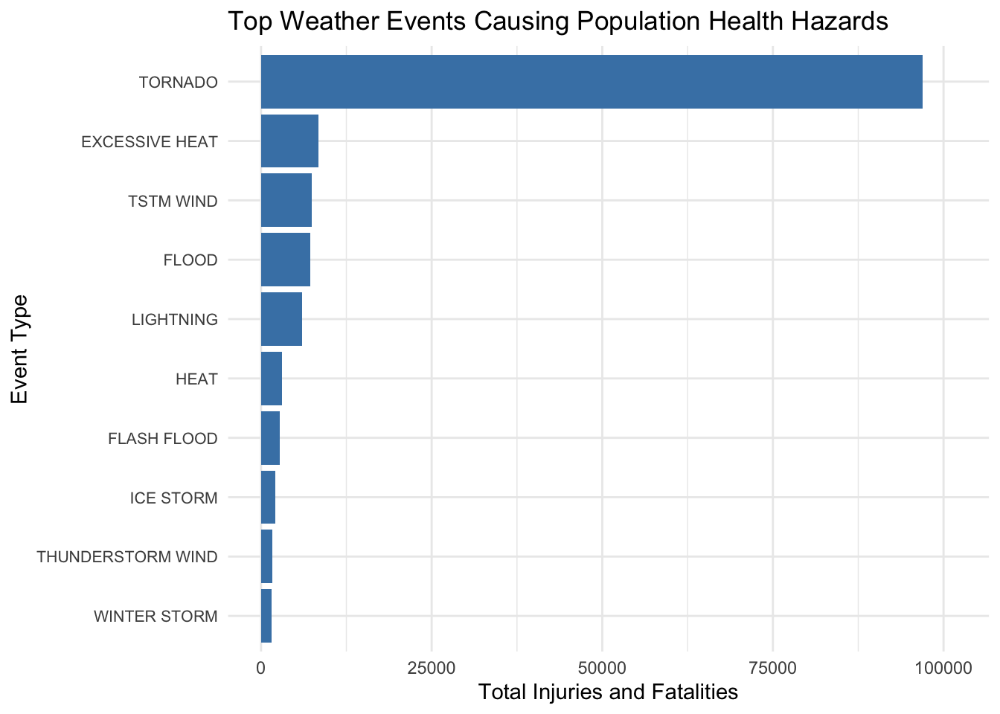
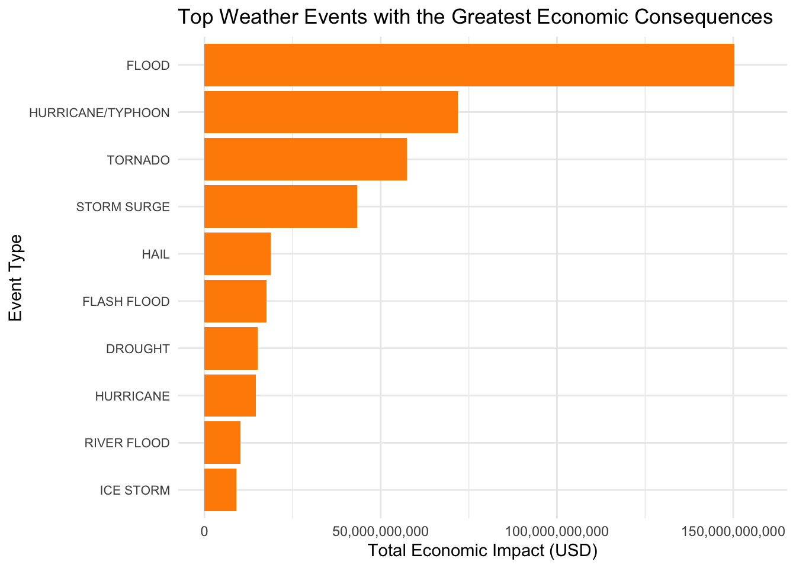

# Load required libraries
# Suppress messages and warnings
library(dplyr)
library(ggplot2)
library(scales)Storm Data Analysis
Instructions
Storms and other severe weather events can cause both public health and economic problems for communities and municipalities. Many severe events can result in fatalities, injuries, and property damage, and preventing such outcomes to the extent possible is a key concern.
This project involves exploring the U.S. National Oceanic and Atmospheric Administration’s (NOAA) storm database. This database tracks characteristics of major storms and weather events in the United States, including when and where they occur, as well as estimates of any fatalities, injuries, and property damage.
The basic goal of this assignment is to explore the NOAA Storm Database and answer some basic questions about severe weather events. You must use the database to answer the questions below and show the code for your entire analysis. Your analysis can consist of tables, figures, or other summaries. You may use any R package you want to support your analysis.
Data
The data for this assignment come in the form of a comma-separated-value file compressed via the bzip2 algorithm to reduce its size. The data for this assignment can be downloaded from here.
The events in the database start in the year 1950 and end in November 2011. In the earlier years of the database there are generally fewer events recorded, most likely due to a lack of good records. More recent years should be considered more complete.
The following analysis addresses two key questions:
Which types of events (as indicated in the ENVTYPE variable) pose the greatest threat to public health across the United States?
Which events have the most significant economic impact nationwide? This examination aims to provide insights into prioritizing resources for severe weather event preparedness without making specific recommendations.
Preprocessing
Loading and preprocessing the data
Environment setup
Read the data
# Check if the file exists, if not, download it
if (!file.exists('data2.csv.bz2')){
download.file('https://d396qusza40orc.cloudfront.net/repdata%2Fdata%2FStormData.csv.bz2',
destfile = paste0(getwd(), '/data2.csv.bz2'),
method = 'curl', quiet = TRUE)
}
# Read the downloaded file into a dataframe
data <- read.csv('data2.csv.bz2', stringsAsFactors = FALSE)Take a first look on data
# Display the structure of the dataframe
str(data)'data.frame': 902297 obs. of 37 variables:
$ STATE__ : num 1 1 1 1 1 1 1 1 1 1 ...
$ BGN_DATE : chr "4/18/1950 0:00:00" "4/18/1950 0:00:00" "2/20/1951 0:00:00" "6/8/1951 0:00:00" ...
$ BGN_TIME : chr "0130" "0145" "1600" "0900" ...
$ TIME_ZONE : chr "CST" "CST" "CST" "CST" ...
$ COUNTY : num 97 3 57 89 43 77 9 123 125 57 ...
$ COUNTYNAME: chr "MOBILE" "BALDWIN" "FAYETTE" "MADISON" ...
$ STATE : chr "AL" "AL" "AL" "AL" ...
$ EVTYPE : chr "TORNADO" "TORNADO" "TORNADO" "TORNADO" ...
$ BGN_RANGE : num 0 0 0 0 0 0 0 0 0 0 ...
$ BGN_AZI : chr "" "" "" "" ...
$ BGN_LOCATI: chr "" "" "" "" ...
$ END_DATE : chr "" "" "" "" ...
$ END_TIME : chr "" "" "" "" ...
$ COUNTY_END: num 0 0 0 0 0 0 0 0 0 0 ...
$ COUNTYENDN: logi NA NA NA NA NA NA ...
$ END_RANGE : num 0 0 0 0 0 0 0 0 0 0 ...
$ END_AZI : chr "" "" "" "" ...
$ END_LOCATI: chr "" "" "" "" ...
$ LENGTH : num 14 2 0.1 0 0 1.5 1.5 0 3.3 2.3 ...
$ WIDTH : num 100 150 123 100 150 177 33 33 100 100 ...
$ F : int 3 2 2 2 2 2 2 1 3 3 ...
$ MAG : num 0 0 0 0 0 0 0 0 0 0 ...
$ FATALITIES: num 0 0 0 0 0 0 0 0 1 0 ...
$ INJURIES : num 15 0 2 2 2 6 1 0 14 0 ...
$ PROPDMG : num 25 2.5 25 2.5 2.5 2.5 2.5 2.5 25 25 ...
$ PROPDMGEXP: chr "K" "K" "K" "K" ...
$ CROPDMG : num 0 0 0 0 0 0 0 0 0 0 ...
$ CROPDMGEXP: chr "" "" "" "" ...
$ WFO : chr "" "" "" "" ...
$ STATEOFFIC: chr "" "" "" "" ...
$ ZONENAMES : chr "" "" "" "" ...
$ LATITUDE : num 3040 3042 3340 3458 3412 ...
$ LONGITUDE : num 8812 8755 8742 8626 8642 ...
$ LATITUDE_E: num 3051 0 0 0 0 ...
$ LONGITUDE_: num 8806 0 0 0 0 ...
$ REMARKS : chr "" "" "" "" ...
$ REFNUM : num 1 2 3 4 5 6 7 8 9 10 ...The data frame contains 902,297 observations with 37 variables.
Let’s start by selecting the relevant columns from the dataset. Since I’m focusing on understanding the correlation between event types and their consequences on both public health and economic impacts nationwide, I’ll choose only the essential columns for this analysis. These are EVTYPE for the event type, FATALITIES and INJURIES to gauge the impact on public health, and PROPDMG, PROPDMGEXP for property damage along with CROPDMG, CROPDMGEXP for crop damage. The magnitude of property and crop damages, represented by PROPDMGEXP and CROPDMGEXP, will help me convert the damage amounts into actual dollar values.
# Select relevant columns from the dataset
relevant_data <- data %>%
select(EVTYPE, FATALITIES, INJURIES, PROPDMG, PROPDMGEXP, CROPDMG, CROPDMGEXP)
# Check the structure of the selected data to ensure correctness
str(relevant_data)'data.frame': 902297 obs. of 7 variables:
$ EVTYPE : chr "TORNADO" "TORNADO" "TORNADO" "TORNADO" ...
$ FATALITIES: num 0 0 0 0 0 0 0 0 1 0 ...
$ INJURIES : num 15 0 2 2 2 6 1 0 14 0 ...
$ PROPDMG : num 25 2.5 25 2.5 2.5 2.5 2.5 2.5 25 25 ...
$ PROPDMGEXP: chr "K" "K" "K" "K" ...
$ CROPDMG : num 0 0 0 0 0 0 0 0 0 0 ...
$ CROPDMGEXP: chr "" "" "" "" ...Before proceeding with converting the damage estimates, it’s a good idea to examine the unique values in the PROPDMGEXP and CROPDMGEXP columns to understand the variety of scales we’re dealing with. This will help me tailor the conversion function accurately. Let’s check the unique values in these exponent columns.
# Unique values in PROPDMGEXP
unique_propdmgexp <- unique(relevant_data$PROPDMGEXP)
print(unique_propdmgexp) [1] "K" "M" "" "B" "m" "+" "0" "5" "6" "?" "4" "2" "3" "h" "7" "H" "-" "1" "8"# Unique values in CROPDMGEXP
unique_cropdmgexp <- unique(relevant_data$CROPDMGEXP)
print(unique_cropdmgexp)[1] "" "M" "K" "m" "B" "?" "0" "k" "2"First, I discovered the unique values in these exponent columns, which revealed a mixture of expected values (like “K” for thousands, “M” for millions, “B” for billions) and some unexpected or unclear values (like ““,”?“,”0”, and various digits). Observing the unique values in CROPDMGEXP, we see a similar situation to PROPDMGEXP with a mix of expected values (“K”, “M”, “B” for thousands, millions, and billions, respectively), lowercase versions of these values (“k”, “m”), and unclear or erroneous symbols (““,”?“,”0”, “2”). This confirms the need for a standardized approach to handle these variations effectively.
Given this, I’ll standardize the exponents and apply a conversion to actual dollar values.
Conversion Function and Application
# Function to convert damage based on exponent, handling various cases
convert_damage <- function(damage, exponent) {
# Standardize lowercase to uppercase and handle known units
exponent <- toupper(exponent)
multipliers <- setNames(c(1, 1E3, 1E6, 1E9), c("", "K", "M", "B"))
# Assign no multiplier to digits and unclear symbols, or implement a custom logic
exponent[exponent %in% c("+", "?", "-", "0", "2", "k", "m")] <- ""
# Default to 1 if exponent is not found in multipliers
multiplier <- ifelse(exponent %in% names(multipliers), multipliers[exponent], 1)
# Calculate and return the actual damage in dollars
return(damage * multiplier)
}
# Apply the conversion to property and crop damage values
relevant_data$PropDamageDollars <- mapply(convert_damage, relevant_data$PROPDMG, toupper(relevant_data$PROPDMGEXP))
relevant_data$CropDamageDollars <- mapply(convert_damage, relevant_data$CROPDMG, toupper(relevant_data$CROPDMGEXP))
# Removing the old damage columns as they are no longer necessary
cleaned_data <- relevant_data %>%
select(EVTYPE, FATALITIES, INJURIES, PropDamageDollars, CropDamageDollars)
# Quick check to see the final cleaned data
head(cleaned_data) EVTYPE FATALITIES INJURIES PropDamageDollars CropDamageDollars
1 TORNADO 0 15 25000 NA
2 TORNADO 0 0 2500 NA
3 TORNADO 0 2 25000 NA
4 TORNADO 0 2 2500 NA
5 TORNADO 0 2 2500 NA
6 TORNADO 0 6 2500 NAData analysis
Across the United States, which types of events (as indicated in the EVTYPE variable) are most harmful with respect to population health?
To find the types of events most harmful to population health, we’ll analyze the FATALITIES and INJURIES columns from our cleaned dataset. By summing these values for each event type (EVTYPE), we can identify which events have had the most significant impact on public health in terms of both fatalities and injuries.
The approach involves grouping the data by event type, then summarizing the total fatalities and injuries for each group. Finally, we’ll sort these summaries to identify the top events causing harm to the population.
# Group by event type and summarize total fatalities and injuries
health_impacts <- cleaned_data %>%
group_by(EVTYPE) %>%
summarise(Total_Fatalities = sum(FATALITIES, na.rm = TRUE),
Total_Injuries = sum(INJURIES, na.rm = TRUE),
Total_Impacts = Total_Fatalities + Total_Injuries) %>%
arrange(desc(Total_Impacts))
# Display the top events with respect to population health impact
print(health_impacts)# A tibble: 985 × 4
EVTYPE Total_Fatalities Total_Injuries Total_Impacts
<chr> <dbl> <dbl> <dbl>
1 TORNADO 5633 91346 96979
2 EXCESSIVE HEAT 1903 6525 8428
3 TSTM WIND 504 6957 7461
4 FLOOD 470 6789 7259
5 LIGHTNING 816 5230 6046
6 HEAT 937 2100 3037
7 FLASH FLOOD 978 1777 2755
8 ICE STORM 89 1975 2064
9 THUNDERSTORM WIND 133 1488 1621
10 WINTER STORM 206 1321 1527
# ℹ 975 more rowsCreating a visual representation of the impact of different weather events on public health will help illustrate the severity of these occurrences in a more digestible manner. I’ll craft a bar plot using ggplot2 in R, showing the total impacts (sum of fatalities and injuries) of the top weather events. This will provide a clear, visual comparison of how each event type contributes to health-related consequences across the United States.
# Plotting the top weather events affecting public health
# Filter for the top 10 events to reduce clutter
top_n_health_impacts <- head(health_impacts, 10)
# Creating the plot with adjusted dimensions and text size
ggplot(data = top_n_health_impacts, aes(x = reorder(EVTYPE, Total_Impacts), y = Total_Impacts, fill = EVTYPE)) +
geom_bar(stat = 'identity', fill = "steelblue") +
coord_flip() +
xlab('Event Type') +
ylab('Total Injuries and Fatalities') +
ggtitle('Top Weather Events Causing Population Health Hazards') +
theme_minimal() +
scale_y_continuous(expand = expansion(mult = c(0.05, 0.1))) +
theme(axis.text.y = element_text(size = 8)) 
Across the United States, which types of events have the greatest economic consequences?
To figure out which types of events have the most significant economic consequences in the United States, I’ll analyze the economic impact using the PropDamageDollars and CropDamageDollars from our dataset. I'll sum up these figures for each type of event to see which ones hit the economy hardest.
# Group by event type and summarize total property and crop damage
economic_impacts <- cleaned_data %>%
group_by(EVTYPE) %>%
summarise(Total_Property_Damage = sum(PropDamageDollars, na.rm = TRUE),
Total_Crop_Damage = sum(CropDamageDollars, na.rm = TRUE),
Total_Economic_Impact = Total_Property_Damage + Total_Crop_Damage) %>%
arrange(desc(Total_Economic_Impact))
# Display the events with the greatest economic impact
print(economic_impacts)# A tibble: 985 × 4
EVTYPE Total_Property_Damage Total_Crop_Damage Total_Economic_Impact
<chr> <dbl> <dbl> <dbl>
1 FLOOD 144657709800 5661968450 150319678250
2 HURRICANE/TYPH… 69305840000 2607872800 71913712800
3 TORNADO 56937160582. 414953110 57352113692.
4 STORM SURGE 43323536000 5000 43323541000
5 HAIL 15732266755 3025954450 18758221205
6 FLASH FLOOD 16140811599. 1421317100 17562128699.
7 DROUGHT 1046106000 13972566000 15018672000
8 HURRICANE 11868319010 2741910000 14610229010
9 RIVER FLOOD 5118945500 5029459000 10148404500
10 ICE STORM 3944927810 5022113500 8967041310
# ℹ 975 more rowsOnce I have this information, I can create a visualization to display these economic impacts clearly.
# I want to display the top 10 for a clearer plot
top_economic_impacts <- head(economic_impacts, 10)
# Plotting the economic impacts
ggplot(data = top_economic_impacts, aes(x = reorder(EVTYPE, Total_Economic_Impact), y = Total_Economic_Impact)) +
geom_bar(stat = 'identity', fill = "darkorange") +
coord_flip() +
xlab('Event Type') +
ylab('Total Economic Impact (USD)') +
ggtitle('Top Weather Events with the Greatest Economic Consequences') +
theme_minimal() +
scale_y_continuous(labels = scales::comma,
expand = expansion(mult = c(0.05, 0.1))) +
theme(axis.text.y = element_text(size = 8))
Results:
Analyzing the NOAA storm data, it’s clear that certain weather events pose significant threats both to population health and to the economy in the United States.
From a health perspective, tornadoes have had the most substantial impact, with 5,633 fatalities and 91,346 injuries, summing up to a total of 96,979 health-related impacts. These events require urgent attention and resources to improve warning systems and build stronger structures to withstand their force. Excessive heat is another major concern, responsible for 1,903 fatalities and 6,525 injuries. This highlights the need for heatwave awareness and cooling shelters, especially for vulnerable populations. Thunderstorm winds, floods, and lightning also rank high in terms of public health impact, with their combined fatalities and injuries bringing to light the necessity for comprehensive weather preparedness plans.
Economically, floods are the most devastating, causing around $144.66 billion in property damage and an additional $5.66 billion in crop damage, culminating in a staggering total of $150.32 billion in economic impact. Hurricanes and typhoons follow with nearly $69.31 billion in property damage and $2.61 billion in crop damage, totaling around $71.91 billion in impact. The massive economic toll of these events underscores the critical importance of investing in flood defenses and coastal protection measures.
Tornadoes, though most harmful in terms of human health, have caused significant economic damage as well, approximately $56.94 billion in property and $415 million in crop damage, leading to a total impact of about $57.35 billion. Storm surges and hail round out the list of top economic hazards, with storm surges causing around $43.32 billion in property damage and hail resulting in about $15.73 billion in property and $3.03 billion in crop damage.
These findings drive home the point that weather events are not just abstract figures on a news report; they’re real and present threats with far-reaching consequences. As a data scientist, this analysis compels me to advocate for enhanced data-driven decision-making in urban planning, emergency response, infrastructure development, and community education to mitigate these impacts effectively. The patterns revealed by the data are a call to action, emphasizing the need to bolster our resilience against the inevitable challenges posed by severe weather.